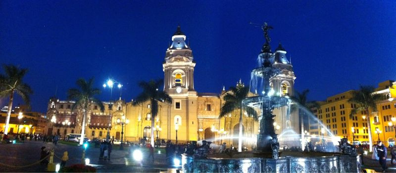

Sun, 10 Oct 2010 12:07:21 · Peru · Lima · Travel · Photography · City · Night · Scene
la vista de plaza darmas del lima en noches

La vista de Plaza D'Armas del Lima en noches… - View of Plaza de Armas, Lima Peru.
Sun, 10 Oct 2010 12:07:21 · Peru · Lima · Travel · Photography · City · Night · Scene

La vista de Plaza D'Armas del Lima en noches… - View of Plaza de Armas, Lima Peru.